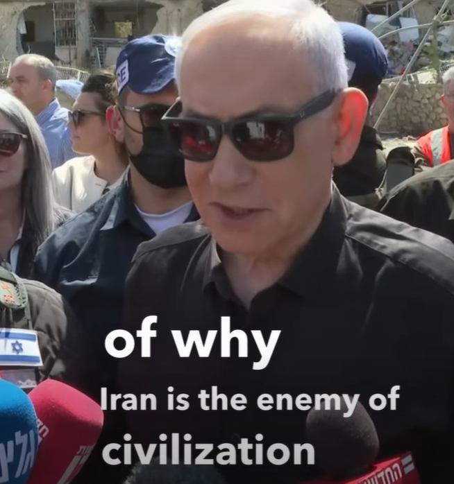

מרץ 2026
בסרטון שפורסם אתמול, פונה ראש הממשלה נתניהו לקהל הבינלאומי באנגלית. המסר המרכזי הוא אזהרה למדינות אירופה מפני יכולות הטילים של איראן, תוך ניסיון לרתום את דעת הקהל המערבית לתמיכה בפעולות ישראל.

על אף הוויראליות העצומה (כ-35 מיליון חשיפות משוערות), הניתוח מעלה כי מדובר בוויראליות עוינת. יחס התגובות לקליקים (1:3) מעיד על רמת "בעירה" גבוהה במיוחד של קהלים המתנגדים למסר. הנרטיב של נתניהו נתקל ב"אנטי-נרטיב" מאורגן הממוקד באירועים הומניטריים באיראן ובעזה, מה שמייצר כשל הסברתי בקרב קהל היעד המערבי.
■ עוין (85%) | ■ ניטרלי/ספקני (10%) | ■ תומך (5%)